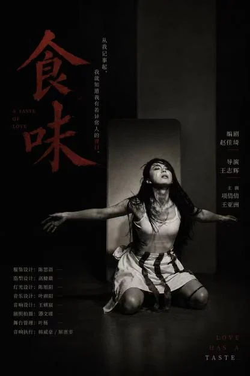
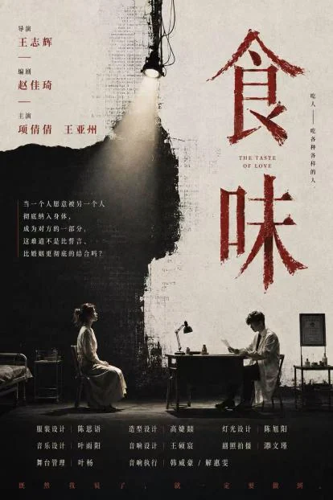
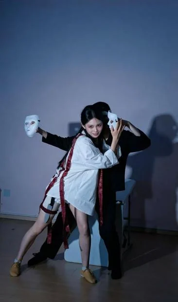
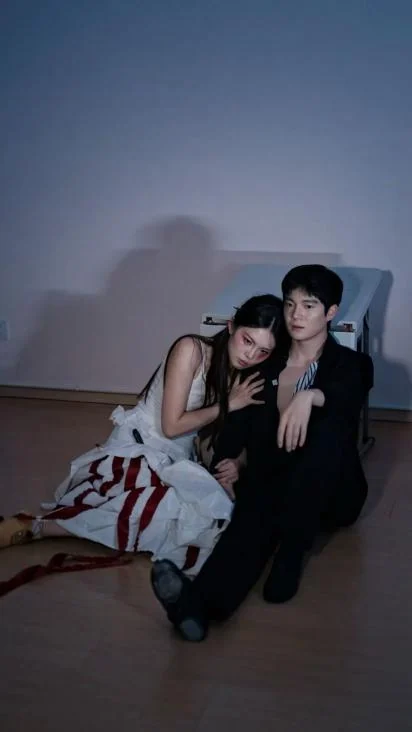

《爱情的味道》/《食味》
相关剧照图集：




简介：
作品曾在群岛戏剧节展演；理想岛戏剧节展演；入围鼓楼西戏剧节。
相关链接：
群岛戏剧节：https://mp.weixin.qq.com/s/UaMLBP1wcqXV2kSF8ajZbA
理想岛戏剧节：https://mp.weixin.qq.com/s/sZL3n3ObZ4W4JI0jIH7jmA
鼓楼西戏剧节：https://mp.weixin.qq.com/s/nL0hbt4Q56hXbJ8ieNGUWg
完整视频内容：
作品梗概：
在吃掉了五个难以下咽的男人之后，偶然之下，女人终于尝到一种难以描述的奇异味道。她痴迷的去烹饪这个男人，甚至舍弃工作、舍弃生活，舍弃自我。终于在吃完最后一口肉之后，她才明白是爱情的味道，而此刻，他的肉体被啃噬的一干二净，她的灵魂被蚕食的所剩无几。
编剧构思
创作这个故事的最初冲动，源于阅读日本作家村田沙耶香的《生命式》。未来世界的葬礼上，宾客们会分食亡者的血肉，然后在葬礼现场性交繁衍——消逝的生命以新生的形式再次展现。书中还有一章提到，人们用人骨制作家具，用门牙做成戒指和耳环，以此象征永恒。这些设定深深震撼了我。
《生命式》提供了一种极具冲击力的思考方式：当死亡与生命、进食与繁衍、毁灭与创造这些看似对立的概念被强行并置时，我们对于爱、对于永恒的理解会发生怎样的变化？书中的世界看似荒诞，实则揭示了一个被我们日常语言掩盖的真相——我们常说“爱到骨子里”“我中有你”，这些隐喻如果被具象化，会是什么样子？《爱情的味道》正是这一思考的产物。我想借由吃人这一极端设定，去探讨爱情中那些真实的、却往往被粉饰的情感逻辑：占有欲、排他性、对融为一体的执念，以及爱情在时间中不可避免的消耗与消逝。
在故事中，吴桐的“吃人”并非单纯的食人癖或病态心理，而是一套完整的爱情语言系统。吴桐吃过五个人，这五个人对应着五段不愉快的恋爱经历，整个故事最核心的爱情观：当一个人愿意被另一个人彻底纳入身体、成为对方的一部分，这难道不是比誓言、比婚姻更彻底的结合吗？
故事的核心悲剧在于，吴桐以为自己是吃完就是拥有齐蓟，实际上她是在消耗他。这是我在创作中最想表达的主题之一——爱情中的双向消耗。吴桐对齐蓟的贪恋让她放弃工作、放弃社交。冰箱里的肉在一日日减少，齐蓟在以不可逆转的速度消逝。这暗喻着在亲密关系中，当我们过度索取、过度依赖对方的存在来满足自己的情感需求时，我们其实是在消耗这段关系本身。
直到冰箱空了，齐蓟被吃光了，吴桐才意识到：她真的爱上了齐蓟，而齐蓟真的是一个很好的爱人。但意识到这一切的时候，齐蓟已经不在了。这就是爱情中最常见的悖论：我们总是在失去之后才确认爱的存在，总是在对方被消耗殆尽之后，才发现那正是我们一直寻找的味道。
现实世界中，有多少人在恋爱中渐渐放弃了自己的社交圈、工作、爱好，全身心扑在对方身上，最终发现自己“什么都没有了”？有多少人在一段关系中不断索取，以为占有就是爱，却没有意识到对方正在被消耗殆尽？有多少人在关系结束后才恍然大悟：“原来他真的是很好的人，原来我是真的爱他”？
故事的最后，冰箱空了，齐蓟不在了。但吴桐手里还有那封信。信不会消失，正如“默默的爱”不会因为肉体的消逝而失去意义。蓟的花语是默默的爱，这种爱不会轰轰烈烈，不会惊天动地，但它会在某个深夜，以一封信的形式，告诉你：你曾经被一个人认真地、长久地、心甘情愿地爱过。
完整剧本
《爱情的味道》
编剧 赵佳琦
序幕：
收音机 欢迎您收听每天晚上七点半的神厨嫁到！每天分享一道美食，美食——
【吴桐走到舞台中央坐下安静的坐下开始磨刀，一下又一下，虔诚的磨着。
吴桐 从我记事起，我就知道我有着异于常人的胃口，庸常的食物无论用何种高深的烹饪方式都仅仅只能用来果腹，无法填满内心的饥渴，于是我患上了严重的营养不良，无药可救。这种异常一直伴随我到十八岁，直到在万有引力定律的指引下，我找到了拯救我的方法——吃人。
吴桐 作为一名吃人的资深专家，我可以很负责任的和你们分享我这些年的一些经验心得，以供大家模仿学习，我们都知道，食材本事决定着食物口味的上限。
【一肌肉猛男上场，展示自己的胸肌。
吴桐 这是我吃的第一个男人，爱健身的体育生。
【吴桐向观众介绍。
吴桐 请问，我能吃了你吗？
【体育生听完以后原地投篮
男人 快来，把我吃干抹净吧，宝宝——
【吴桐手起刀落，体育生原地倒下，倒下还要再头一个篮。
吴桐 皮糙肉厚脂肪少，文火慢炖，好好沉淀。
【躺在地上的男人蜡烛吴桐的手，原地起来，开始吟诗。
男人 为什么要用世俗的规则来定义我们的感情呢，爱你，歌颂你，把你视为我贫瘠土壤上唯一的缪斯——
吴桐 还是个诗人——
【吴桐手起刀落
吴桐 （嫌弃地扇扇鼻子）酸腐味太大，猛火爆炒，多辣多麻。
【男人倒下后迅速起身，冲吴桐冲过来举起拳头
男人 都是你逼我动手的。
【吴桐冲男人举起刀，男人立马跪在吴桐面前。
男人 我是因为太爱你了，我发誓绝对不会犯第二次。
吴桐 这种肉最好了，打成牛肉丸，Q弹劲道。
收音机 如果想了解到更多菜品的制作方法，欢迎大家购买我们的官方菜谱！订购热线2008个8.
吴桐 吃人——吃各种各样的人。
男人 这让她感到狂热。
吴桐 吃人——吃各种各样的人。
男人 这也让她感到痛苦。
【画面：梧桐内心狂热痛苦的情感纠结，肢体展现痛苦，生理反应的兴奋，纠葛
【梧桐在这个过程中会被红布缠住，冲出红布，撕开红布，
吴桐 一旦品尝过人的滋味，就很难回到过去了。
男人 吃吧，大口撕咬吧，你不是饿了吗？
男人乙 不要！吃的太杂你会忘记正常食物的味道的，听我的，放下吧。
男人甲 放屁——人生苦短及时行乐
男人乙 胡说——人贵在清醒克制
吴桐 我好像逃走。
男人甲 开弓没有回头箭，你已经吃过人了，你回不到过去了。
男人乙 只要你想，你随时能做到放下。
吴桐 要放下吗？（不住的摇头）
男人甲 你做不到的。没人能抵抗肉的魅力，乖乖束手就擒吧。
男人乙 可你不能再继续吃垃圾了。
男人甲 所以，你要吃人——吃优质的人。
吴桐 吃人——吃最好的人。
男人乙 她的嘴巴不允许她再填满垃圾。
吴桐 要么不吃，要么就吃最好的。
男人甲 要么不吃，要么就吃最好的。
男人乙 你赢了。
男人甲 是她输了。
男人乙 一年零三个月，她一直在寻寻觅觅。
吴桐 我见了太多劣等的肉材：太瘦，太肥，太腥，太骚。一年零三个月，我一直在寻寻觅觅。
男人乙 为了一块肉，值得吗？
吴桐 值得。当一个人愿意被另一个人彻底纳入身体、成为对方的一部分，这难道不是比誓言、比婚姻更彻底的结合吗？
男人乙 你这是病，得治——
吴桐： 或许，我真的病了——
第一幕：饥饿的我
【舞台被分为两个演区。左侧是医生诊室，有一张桌子、两把椅子。
【吴桐带着口罩，从序幕的舞台中央起身，走向诊室。她敲门，进入。左侧灯亮。
吴桐 医生您好。
齐蓟 看你的报告说你有进食困难，营养不良。具体是哪一方面的进食困难？
吴桐 主观意愿上的不想吃，还有一个原因是能入口的食物太少了
齐蓟 是因为过敏吗？
吴桐 可以这么说吧，我对大部分的肉都过敏，现在黑心肝的人太多了，导致我食物的污染源大大增加。
齐蓟 嗯，确实，和过去相比现在想吃得健康的确需要花些心思。这种情况多久了。
吴桐 太久了，从记事起，我对食物的渴望程度就很低。
齐蓟 根据我的初步诊断，你的父母没有给你一个好的食物鉴别基础导致你从幼儿开始就没有建立一套完整的感受体系，长大后，社会和学校对于这方面的教育普及较弱，你也自然无法天然学习到这方面的知识。这是一个很难缠的病症，很有可能伴随一生。
吴桐 啊——这么严重。
齐蓟 是的，比病证本身更悲哀的是这病直到现在都没有得到明确的定义和治疗方向。不过你也不用担心，和这种病症和谐共生的人不占少数。
吴桐 嗯（点点头）
齐蓟 你先躺下，我做一个简单的检查。
【吴桐躺在医生面前，医生带着听诊器听吴桐的肚子。
吴桐 （跳出语境）每次来医院，这样的检查都会让我觉得自己是案板上的一块肉。
齐蓟 屏住呼吸。
【齐蓟俯下身子开始检查。
吴桐 这个医生的眼睛还挺好看，不知道嚼起来口感怎么样。
【吴桐的肚子咕咕叫音效。
【齐蓟拿起听诊器换了个位置。
吴桐 嗯，手指也很修长，做无骨人爪也不错。
【吴桐的肚子再次咕咕叫音效。
齐蓟 坐起来，背打直，我听一下后面。
【吴桐按照医生要求做。
吴桐 脖子看上去又长又嫩，麻辣人脖配小啤酒。
【吴桐的肚子发出巨大的咕咕叫音效。
齐蓟 你是不是饿了？
吴桐 没有啊。
【齐蓟收好听诊器搬了一把椅子坐在吴桐对面。
齐蓟 摘一下口罩我看看舌头。
【吴桐照做。齐蓟原本伸出的压舌板愣在远处，吴桐也吐着舌头愣在远处。
吴桐 （一边吐着舌头一边说）怎么了医生？
齐蓟 你——
【齐蓟闻到了一阵味道，突然愣在原地
吴桐 （跳出语境）这下完了，世界上最可怕的三件事，一视奸手滑给前任点赞；二开会时老板喊你全名； 三——医生的欲言又止。
吴桐 医生，我就知道这些年垃圾食品吃的太多了，身体早就烂透了，只可惜我这大好青春年华，没等满园春色关不住就已经北风卷地百草折了，你就告诉我一句痛快话，我还有多久吧——
齐蓟 虽然我并不知道你究竟是怎么了，但你先镇定一点。
【吴桐啜泣一抽一抽的，齐蓟递纸。吴桐趴在医生身上哭。
吴桐 医生我是病入膏肓出幻觉了吗？这是什么味道——纯洁的，独一无二的 味道，我从来没有闻到过这么迷人的香味——在哪里呢？
【吴桐顺着香味寻找，医生也反方向的寻找，二人同时转回身碰在一起，吴桐挂在医生身上贪婪的闻着香味。
吴桐 香味就在这儿——
吴桐 （跳出语境）我想我找到了我想要的了。
齐蓟 我想我终于找到我想找到的了。
【吴桐尴尬的从齐蓟的身上跳下来，两个人都因刚才的亲密接触手忙脚乱。
齐蓟 关于你的病，我再给你开点调整的药。
吴桐 不用了，看见你我已经好多了。
齐蓟 真的吗？
吴桐 是啊，被您这样的医科圣手瞧一瞧，我就什么病都好了，对了齐医生，后续有什么情况，我想随时可以向您反映，我们——
齐蓟 我们加个联系方式吧。
【齐蓟伸出手机，吴桐走到齐蓟身旁，狐狸捕猎一般俏皮地歪头将脸靠在齐蓟的手上。
【二人分别后，舞台左边亮红色的光，右边是黄色的光。吴桐在家里开始收拾冰箱。
吴桐 天呐，世界上竟然存在着如此新鲜，芬芳，柔软的肉，这么一对比我过去吃的简直都是垃圾！我吴桐一定要拿下他！不过，在这之前我必须先做些准备。
吴桐 首先，冰箱里这些脏的臭的化水的肉得先清理干净，毕竟腾出一片干净的位置才是对后来者最大的尊重！
【吴桐开始从冰箱里嫌弃的拿肉出来
吴桐 （呕吐）啧啧，这种货色你竟然也吃得下去。
【吴桐华丽的丢出去。
吴桐 go away!bye～
【吴桐收拾一下之后突然想起自己还需要准备好杀人工具。
吴桐 哦！对了，工欲善其事必先利其器。
【吴桐开始磨刀，一边磨刀一边哼着小曲。
吴桐 上次就是因为刀太钝，砍到一半人醒了，血没放出来酸的不行。这个时候有姐妹就要问了，你这么有经验，那可不可以分享一下你的狩猎技巧呢？来了来了，姐妹们，快拿出小本子，划重点——捕猎的时候要想象自己是一只狐狸，一只拥有着独特的地磁测距术的捕猎高手。狐狸的捕猎过程主要分为四步，首先是寻迹。
【吴桐进入幻想世界，齐蓟配合她做动作。
【吴桐紧跟随着齐蓟的步伐，亦步亦趋。
吴桐 微信步数三千五百步，是他与医院的距离。八千三百步，齐蓟绕滨江公园慢跑一圈的距离；十二步，从卧室到厕所的距离。摸清他的轨迹之后，就可以进行下一步——窥探，掀起他生活的一角，保持歪耳立体听觉状态敏锐的窥探。
【吴桐作出当时歪头贴向齐蓟手的动作，持续小心窥探着齐蓟的生活。掀起齐蓟的衣服角，趁他不注意再掀起他的裤脚，掀起他的鞋底，最后在他的头皮上翻找。
吴桐 齐医生的网名叫做蓟的夏天；微博抖音小红书，呦还是个做饭小能手呢，看着真是色香味俱全，诶——巧得很，他老家和我是一个地方。2018年6月，让人牵肠挂肚的你。你？是谁？算了，我马上让你牵肠挂肚。
【吴桐跳上齐蓟的后背。
吴桐 第三步，潜近。齐医生，和你聊了这么久感觉你真是有趣。
齐蓟 我也这样觉得。
吴桐 看你在朋友圈有分享南湖的照片，我一直想去看看的。
齐蓟 要不我们周末去逛逛？
吴桐 好呀，那周末九点我们不见不散。
吴桐 第四步，也是最后一步——猛扑，控制好跳跃力度，确保爆发力最大化。
【吴桐和齐蓟处在舞台的左右两边，两个人开始同步做动作。
吴桐 今天，是我美梦成真的一天。（嗅）
齐蓟 今天，是我美梦成真的一天。（yes！）
吴桐 提前三个小时起床做准备-洗漱-护肤-化妆-粘假睫毛-假睫毛压眼睛又摘下来-换上新衣服-一般-再换一件-再换一件-perfect-颅顶增高-距离约会还有半小时我已做好准备。
齐蓟 （打呼噜）睡个回笼觉-早上八点半起床-开始洗漱-挂了胡子-洗了头-闻闻衣服-嗯，不臭-换上-拿出皮鞋-垫上增高鞋垫-喷点香水，小红书种草的，斩女香-在镜子前欣赏自己一分钟-抬起胳膊仔细闻-没问题很完美-距离约会还有半小时我已做好准备。
吴桐 喂，齐医生我到公园门口了呀，你在哪里？（我最讨厌迟到的人了）
齐蓟 实在不好意思，周末停车位不好找，我马上到！（她应该能听出来，我是开车来的）
吴桐 齐医生这里！
齐蓟 这天气太热了，（天热脚底板出汗，增高鞋垫直打滑）。这是给你买的喝的，抹茶拿铁加冰不加糖。
吴桐 好巧（吴桐从身后拿出两杯喝的）抹茶拿铁加冰不加糖。
齐蓟 确实好巧。
【两个人都不好意思的笑笑，吴桐率先打破尴尬。
吴桐 那边可以划船，我们也去看看吧。
齐蓟 好啊好啊
【吴桐和齐蓟坐在地上开始划船。
齐蓟 最近怎么样，还是吃不下东西吗？
吴桐 已经好多了，找到了对口味的。
齐蓟 那就好，能够找到对的比什么都重要。
吴桐 可是如果没尝过错的，怎么知道什么是对的呢？
齐蓟 这个问题很难回答，我们有很多的研究结论去定义一种食物，但却逃不脱因人而异这四个字。比如生姜，脾胃虚寒者吃了温中止呕，可是阴虚火旺者吃了会失眠多梦，诱发出血。
吴桐 因人而异 ，那齐医生喜欢吃什么？
【齐蓟呆呆的望着吴桐。然后举起手中的喝的。
齐蓟 抹茶拿铁加冰不加糖。
吴桐 肉麻——
齐蓟 食色性也。（平淡的说出）
【两个人都不说话了，安静的注视着彼此，划船的时候两个手会在顶点相撞一瞬间再迅速分开。
吴桐 船在水面上静静滑行，两岸的风景向我身后退去，他用湿湿的眼神望着 我，莫名让人口干舌燥。
齐蓟 船在水面上静静滑行，我迎面向远处的风景驶去，船桨在湖面上荡起层层涟漪，搅得我心神不宁。
吴桐 这天气，真有点热。
齐蓟 嗯，好热。
【夜晚齐蓟送吴桐回家，二人安静的在路灯下行走
齐蓟 当时孩子妈妈都快急哭了，我一拳就把那个插队的打飞了。
吴桐 想不到文质彬彬齐医生还有这么暴躁的一面。
齐蓟 不过，见义勇为也是有代价的，我后面又是检讨又是赔钱。
吴桐 那下次你还会这么做吗？
齐蓟 （点头）会。
吴桐 你和大多数人不太一样。
齐蓟 如果大多数人如果和我不一样，那才是一件让人难过的事。
吴桐 我到家了。
齐蓟 好，再见——
【齐蓟转身就走。
吴桐 齐蓟（犹豫很久）要不要上来坐坐。
【吴桐保持不动，齐蓟陷入内心纠结。
齐蓟 （犹豫很久）不了吧，太晚了，你早点休息。
吴桐 （长舒一口气）好，你也是！
【二人擦肩而过。
【吴桐回到家，紧靠在门上。歇斯底里的敲地。
吴桐 两种完全矛盾的情绪在我的脑中打架，一个声音大声的叫嚷着宣泄着：吃了他，你不是想吃了他吗？还在犹豫什么，动手啊，拿下这块极品的肉！一个男人吃了就吃了。
另一个声音梵音般安静地在心上盘旋：放过他，放过他，放过自己。
吴桐 或许，这就是天意。
【吴桐话音刚落，门口响起敲门声。
齐蓟 吴桐，是我。
【吴桐打开门。
吴桐 你怎么？
齐蓟 我有东西要给你。
【齐蓟拿出一封信塞到吴桐手上。
齐蓟 想对你说的话。好了，我的任务完成了，晚安——
【齐蓟转身就要走，吴桐拉住齐蓟的手腕。
吴桐 （跳出语境）如果你现在走了，那我就下定决心放过你，如果你选择留下，那就是天意了。
【齐蓟转身看向吴桐。
齐蓟 好，我不走。
【吴桐冲齐蓟微微一笑。吴桐将信扔到观众席的第一排。
【舞台亮起局部光。
吴桐 齐医生，请吃，我的拿手好菜，一锅烩。
【齐蓟切下一块肉送进嘴中
齐蓟 哇，玉米，豆角，方便面，甘蔗渣，瓜子皮——好丰盛的一锅烩啊！平时就吃这个吗？那我知道你为什么会不爱吃饭了。
吴桐 家里面收拾一下，干净多了。
齐蓟 （点头）小学的时候，我在一个寄宿学校，食堂为了节省成本，总是喜欢各种菜烩成一道菜，后来我们才知道，学校的大师傅以前是养猪的，猪食也是这么做的。
【吴桐一口水喷到齐蓟脸上。
吴桐 呀！不好意思，我再给你做新的——
【吴桐帮忙擦水，擦着擦着就把齐蓟的上衣脱了。齐蓟害羞的捂着胸口
齐蓟 倒也不用这么客气，这样吧，我给你做点吃的吧。
吴桐 好呀
【吴桐给齐蓟围上围裙
【舞台亮起局部光。
【齐蓟打开冰箱，愣在原地。吴桐赶紧挡住齐蓟。
齐蓟 我只是想从冰箱里拿两个鸡蛋。
吴桐 我帮你拿！
齐蓟 好——那你捎带手再拿两个土豆吧，我再炒个酸辣土豆丝。
吴桐 我们家里从来不买土豆的。
齐蓟 不喜欢吗？
吴桐 准确来讲是痛恨——
【吴桐一转身，灯光变化，变成小时候，舞台正中一张旧方桌，两把椅子。头顶一扇老式吊扇缓慢旋转，发出“吱呀——吱呀——”的声音。
【小吴桐坐在桌子前带着口水巾准备吃饭。
吴桐 （独白） 从我记事起，我就害怕吃饭。和大多数爱把食物当成玩闹的道具以此在父母面前博爱的臭小孩不同，我是真的害怕。我们家餐桌正上方有一顶摇摇欲坠的绿色吊扇，三片叶子靠着一根细细的脏脏的带着蛛网的电线吊着，打开开关的时候，风扇在启动前会先发出阵阵嗡鸣，随即就像拨浪鼓的脑袋一刻不停歇的转起来，转起来，这个时候我总会不眨眼的盯着它，仿佛只要我看着，他就不会掉下来。
妈妈 吃饭了。（大声的喊、画外音）
吴桐 妈妈开饭前总喜欢打开它，她说这样，饭菜凉的快，吃的也快，快些吃完快些做作业，我不敢吃，我生怕哪个没有注视到的瞬间，电线瞬间崩裂，三片叶子高速飞旋着掉到我的头上，让我人头分家，我甚至还会想，脑袋落地的瞬间，我还要高速的眨眼15下，像拉瓦锡那样用生命证明，头上的风扇风险很大，在我还是个孩子的时候，我就已经知道他了。
【妈妈用筷子敲碗，表示让吴桐快吃。
吴桐 不过，比起风扇，我更害怕的是我妈，一个根本不敬畏生命不懂科学的屠夫厨娘。
【妈妈夹起一块土豆到吴桐的碗里。
吴桐 妈，土豆发芽了。
【吴桐妈妈摔筷子。
吴桐 老师说了，发芽的土豆里有龙葵素，会死人的。
【吴桐妈妈一拍桌子，站起来，夹起一块递到吴桐嘴边
【吴桐拼命的摇头。
吴桐 妈，求你了，我不想死。
【母亲再次递过去，掐着吴桐的脸，吴桐别过去，被母亲送开后扣嗓子呕吐。
吴桐 妈，我真的不想吃，求你也别吃。
【母亲拉过吴桐面前的碗，大口吃起来。吴桐看着母亲，眼睛里满是恐惧
吴桐 妈！求你了别吃了！（跳出演绎的情绪开始回忆） 她大口大口的吞咽着，眼睛都没眨一下。年幼的我一直觉得她多少是中毒了的，毒素一定直达大脑，控制着她的中枢神经作出非人的行动，不然为什么会作出那样顽固无知的行为呢。
【吴桐妈妈再次把装着土豆的盘子递了过来示意让吴桐吃。
【吴桐拿起筷子，手抖。她夹起土豆，盯着。拼命摇头。
母亲 吃！
【吊扇“吱呀”一声。吴桐把土豆塞进嘴里，嚼得很慢，咽下。母亲盯着她。
【吴桐紧闭双眼痛苦的咽下土豆。
吴桐 （独白） 我咽下去的时候，觉得那颗发芽的土豆在我胃里活了。它的芽从我的嗓子眼里往上爬，根扎进我的胃壁，叶子从我的牙缝里钻出来。我的身体里，住进了一个不属于我的东西。
【吴桐妈妈再次递来一块。吴桐吃下去。
母亲 再吃一块。
【吴桐又夹起一块，塞进嘴里。她突然干呕，被母亲一个眼神逼了回去。
吴桐 一口接着一口，我像母亲一样狼吞虎咽的把剩下的土豆吃完。 风扇没有掉下来。土豆也没有毒死我。可那一盘发芽土豆，像种在我的胃里一样，霸占着胃部大部分的面积，把我对正常食物的最后一点念想，全当作肥料催熟它的生长，自此，我对食物的最后一点念想，消失殆尽。
【吴桐恢复现实状态。
齐蓟 土豆长了芽确实不能吃的，你做的没错。
吴桐 错不错的早就不重要了，我已经长大了，吃不吃土豆还是有点做主的权利的。
【吴桐拿住刀，齐蓟继续做饭。吴桐紧盯着齐蓟的脖子。
齐蓟 我的厨艺很好，只要你能想到的菜我都会让他们排着队跑上餐桌的，不会有人再逼你吃你讨厌的食物，做你反感的事情，我保证。
【齐一边炒菜一边回复吴桐的话。
【吴桐高高举起刀，又犹豫的放下，最后下定决心举起刀，准备刺下的瞬间，齐蓟转身将一块子西红柿炒鸡蛋塞进吴桐嘴里。
齐蓟 好吃吗？
【吴桐把刀叉回刀架上，吴桐抱住齐蓟。
吴桐 好吃。
【吴桐将手搭载齐蓟的肩膀上，环抱住齐蓟，两个人伴随音乐翩翩起舞，以意向化的舞蹈表达二人发生关系。
吴桐 好吃吗？
齐蓟 好吃。
【齐蓟独白。
齐蓟 我不得不承认，刚开始的确是见色起意，这并没有什么值得羞耻的，甚至我隐隐为止自豪，因为我爱的时间从见到你那一刻便一秒都没有浪费。我从不认为我是个勇敢的人，甚至有些懦弱，感情的窗子始终没到必须要打开的地步，可当你从窗口走过的瞬间，带着淡淡松香扑面而来的，是你的爱意，我知道，这间屋子，必须该通通风了。
【二人背靠着瘫坐在地上。
吴桐 齐蓟，我要和你坦白一些事情。
齐蓟 冰箱里的是人肉吧。
吴桐 你看到了。
齐蓟 嗯。
吴桐 十八岁开始到现在，我吃了（数手指）好多人。
齐蓟 不去想了，你生病了。
吴桐 （笑）你不能因为你是医生就说我有病吧。
齐蓟 我认真的。
吴桐 那病因呢？先天？还是后天？
齐蓟 致病因素太多了，也很难说是单一的条件的导致的，譬如家庭、譬如教育、譬如儿时的一个安静午后，人类是脆弱的存在，任何的风吹草动都会引起灵魂的震荡。
吴桐 给我开点药呢？
齐蓟 没用的，已经过了黄金治疗期了。
吴桐 那为什么是我生病？这不公平。
齐蓟 是的，这并不公平，可天底下的事大多都不太公平。公平是不公平受益者的口号。
吴桐 齐医生，难道我的人生就没有救了吗？难道我就要为此葬送我美好的一切吗？
齐蓟 还有最后一个方法，你相信我吗？
吴桐 相信。
齐蓟 吃了我。
【齐蓟认真的看着吴桐
齐蓟 吃了我，让我变成你的一部分，陪着你，
吴桐 吃掉你，你会死的。
齐蓟 我愿意。
吴桐 你做好准备了吗？
齐蓟 从此之后，你中有我，我中有你，你相信我，我就在。
吴桐 从此之后，你中有我，我中有你，我相信你，你就在。
【吴桐拿起刀，齐蓟先他一步主动将刀插入身体里。
齐蓟 吴桐，为你，我心甘情愿。
第三幕：芬芳的花
吴桐 齐蓟死掉之后，我以最快的速度分割了他的肉。他的肉跟别人完全不同，格外鲜嫩多汁，冒着腾腾的热气，尚未停止跳动的筋膜发出有节律的颤动。我小心翼翼的切下一片，来不及过多的烹饪，虔诚地放进嘴里。
【吴桐双眼放光，热泪盈眶的说。
吴桐 原来，是这个味道啊。原来，应该是这个味道啊。
【吴桐从最开始的小口咀嚼到大口的吞咽
吴桐 我贪婪的吮吸着属于齐蓟的神秘味道，如同两只温润宽厚的手掌轻轻扶过我的皮肤，触及之处分泌着细秘的汗珠，轻轻的，痒痒的，突然，一只手猛的抓紧我的心脏，我咽下他的肉，顺着食管反出贪婪的口水，促使着我一口一口，不想停歇，我的口味被他粗暴的矫正，我的生活被他蛮横的霸占。
【吴桐从椅子上站起来，原地双膝跪下。
吴桐 今后的日子里，我开始想尽办法，享用齐蓟。
【吴桐在舞台中间开始切肉，背景音的收音机一直在响
收音机 小厨娘们大家好，欢迎您收听每天晚上七点半的神厨嫁到！每天分享一道美食，炸猪排——
吴桐 经理我有点儿饿了，我能不能回家吃点东西再回来。
经理 我们在开会诶！你把公司当什么了？你把工作当什么了。
吴桐 对不起经理，我最近没休息好。
经理 那你就回家好好休息吧
收音机 香煎猪排。首先请选择用猪里脊或梅花。
吴桐 老板，我是来买锁的，你这儿有那种最防盗，最坚不可摧的，只有我一个人才能打开的锁吗？
超市老板 市场上没有这种锁，这种锁都是监狱用来关犯人的。
吴桐 那你就把你这儿所有的锁都给我，总有一把会有用的。
收音机 用刀背或肉锤反复拍打肉排至松软，务必切断边缘白色筋膜防止炸后卷曲。
好友 今晚的徒步我们要去不周山！
吴桐 没时间！晚上的徒步我不去了，这周末的也不去了，下周的，下个月的，以后的我都不去了。
收音机 加盐、料酒、葱姜水抓匀按摩，冷藏腌制，隔夜更入味。
吴桐 （打电话）张小知吗？我正式通知你之后不能再陪你逛街了，我有更重要的事，你找别人做你的朋友吧，哦，对了你是个好朋友。
收音机 根据追求的口感，煎制前可选择是否裹粉。
吴妈 闺女（敲门）半个月没收到你的消息了，我来看看你啊——
收音机 要注意观察猪肉的状态哦。
吴桐 我不在家。
吴妈 开门吧——你是不是还生妈妈气呢？
收音机 裹粉有助于煎制时形成微脆外壳并锁住肉汁。
吴桐 裹粉-裹粉-（过分！）
吴妈 是，我做的是有点过分。
收音机 下锅后注意火候，注意不要煎糊了。
吴桐 火候——
吴妈 （更用力的敲门）你把门打开，打开！
【吴桐忍无可忍，一把抽出刀子，开门
吴桐 走！你走！
吴妈 白眼狼——
【吴桐关上门，刀落在地上，赶紧跑到锅旁边，发现已经糊了。
吴桐 啊！！！（委屈）怎么糊了，没关系，我还有，冰箱里还有。
【吴桐打开冰箱，再次开始疯狂进食。
吴桐：刚刚砸门的那个人是我的母亲，命运把她变成一个钢铁般的寡妇，她却试图让我父母双全，这对我们都不公平。
【吴桐张开双臂，仰起头。灯光亮了一瞬，又暗下去。
【两座坟，周围人哭的悲伤，天上撒着白色的纸钱，犹若大片的纯白色雪花。
吴桐 十七岁那年，我爸死了。一向自诩是铁石心肠的母亲跪在坟前哭的浑身打颤，那个瞬间我突然想到那盘发芽的土豆，或许，土豆的毒在此刻才延缓发作。
母亲 吴桐，你爸走了，以后咱们娘俩要相依为命了。
吴桐 我妈在哭，我应该在哭。爸爸被埋在农村的山上，隔壁的坟头看着很新，土是翻过的，贡品也尚未腐烂。我知道这是常常哄我买糖的隔壁叔叔，年纪轻轻，博学和蔼，见义勇为，英勇牺牲。
母亲 你怎么一滴眼泪都没有？你爸死了，你不难受。
吴桐 心里有个大胆的想法，人肉会是什么滋味呢？
母亲 畜生！我打死你——
吴桐 母亲突然暴起，像是个专业的话剧演员一般把所有情绪放在最高点，表演给前来吊唁的宾客，似乎只要证明了我的不孝，就可以证明她的勇敢，忠贞，善良，伟大。终于，她打累了，在宾客的劝说下开始组织丰盛的宴席，鸡鸭猪牛羊轮番派跑上桌，我见了都反胃，心里惦记着刚才的大胆想法，趁大家不注意，溜出宴席，溜到山上去。
【吴桐趴在地上开始挖坟墓。
吴桐 开席了，谁还会关心死人，哪怕他是这顿饭的主人。山上无人看守，我三下五除二就扒开新坟，那是一具皱巴巴的尸体，干瘪方正的脸，宽大的孝服，蜷缩的手指。我第一次这么近距离的直视一个人的死亡形态，哪怕是我刚过世的爸我都是不想看的，不免有些诧异，原来人死了就像猪死了牛死了没什么两样，不过是四四方方一块肉。我凑上去，想要近距离仔细看看清楚，可令我意外的事就在此刻发生，我竟然在他身上闻到一种奇异的香味，一种温暖的裹挟着淡淡松木香气的味道将我环抱。奇怪，课本中的死人死后应该散发的是臭味，为什么他是香的。
【吴桐贪婪的闻着味道。
【吴桐从怀里掏出一把刀对准尸体。
吴桐 尝试了四次，我还是无法下手，毕竟，那时的我，还是个孩子，一个信仰科学也相信神明的孩子，尚且对死亡怀有着敬畏之心，甚至有些崇拜。对着这具陌生尸，我做了一件意料之中又意料之外的事——许愿。
【吴桐跪下开始许愿。
吴桐 请保佑我，保佑我长大以后有吃不完的人肉。吃不完的，人肉。
村民 （画外音）喂！吴桐，你爸的坟在隔壁！别跪错了。
【吴桐跪拜着睡着。
【齐蓟从暗中走来跪拜在坟前，用听诊器听了尸体的心跳，回头望了一眼吴桐，然后离开。
尾幕：再见，爱情的味道。
【吴桐悠悠转醒，魂不守舍的从地上站起来。
吴桐 新的一天又开始了，我又饿了——
【吴桐看向冰箱，发现冰箱里空空如也。
吴桐 （跳出语境）在找什么？肉不是被你吃干净了吗？
吴桐 什么时候？
吴桐 （跳出语境）就在昨晚，你把他吃得一干二净，半块都没了。
吴桐 是啊，没有了，没有了——
吴桐 （跳出语境）不仅如此呢，让我来算算你最近还做了哪些荒唐事——为了吃了他，你放弃了自己稳定的工作，喜欢的爱好，社交的圈子，以及你并不幸福但还算完整的家庭，现在的你，一无所有。为了一块肉值得吗？
吴桐 可他不一样，他和别人不一样。
吴桐 （跳出语境）我知道他和别人不一样，准确来讲，他妄图用自己来拯救你，但是失败了，所以你要清楚，不值得的不是为他，而是为你，你自己的一切，值得吗？
吴桐 你别再说了，我已经很难受了。
吴桐 （跳出语境）恭喜你，这次你真的遇到了顶级的食材，他也心甘情愿被你吃掉，原本你按照计划，慢慢的享用一辈子也是可以的。但是你太心急了，瞧瞧，吃光了吧，吃光了你才意识到他有多宝贵了吧。
吴桐 没有人教过我该怎么对待他，没有人教我如何去爱。
吴桐 （跳出语境）你终于承认了。
吴桐 可是一切都晚了。他的肉被我浪费光了。
吴桐 （跳出语境）去找找吧，说不定还有一些他的碎片。
【吴桐走到第一排观众位置。
吴桐 喂，你见过齐蓟吗？你有他的消息吗？
吴桐 你呢，你有见过他吗？
【观众把信递给吴桐。
吴桐 这是？
吴桐 （跳出语境）那天晚上，他给你的信。
【吴桐展开那封信。齐蓟上台。
齐蓟
【亲爱的吴桐同学
思来想去，我决定以这样的形式向你表明心意。
缘分生出巧合，巧合凑成缘分，你摘下口罩那一瞬间，我找到了那抹留在我孩童时期的印迹，我牵肠挂肚当的人，缘分悄然发生，没有预兆，无需解释，一切变得顺理成章。
你还记得我吗？
我是齐蓟呀，小时候那个憨憨的住在你家隔壁的小胖子齐蓟，你可能，已经忘记我了，可是我的的确确记住你好多年，因为，你真的很特别。你总是凑近我的后领口贪婪地偷闻个不停，然后呆呆的看着我吞口水，那个时候我甚至怀疑你是不是想吃了我，直到有一天，我忍不住问你，到底在闻什么？你舔了舔嘴角，不好意思的说：是香香的味道啊。后来我想明白了：“那大概就是爱情的味道吧。”因为那一刻我也闻到了。我爸去世后，我就离开了那里，最后一次见面是一个尴尬的场景，你跪在我爸的坟前比我还要虔诚的跪拜，虽然不知道你许的是什么愿望，但我祝你梦想成真。